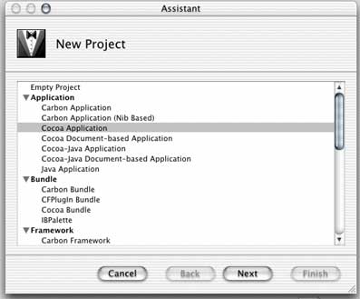

Starting the Project

- Start up Project Builder (/Developer/Applications/Project Builder).
- Go to File -> New Project.
- Select a Cocoa Application (not a Document-based Application). Document-based applications are reserved for applications which open up multiple instances of its workspace window, such as a text editor. Since the EdenMath calculator has need for only one window, this project should be just a standard Cocoa Application.
- Name the program whatever you want. In this example, it has been named EdenMath.